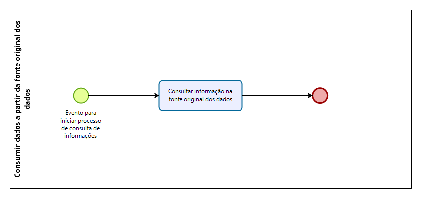
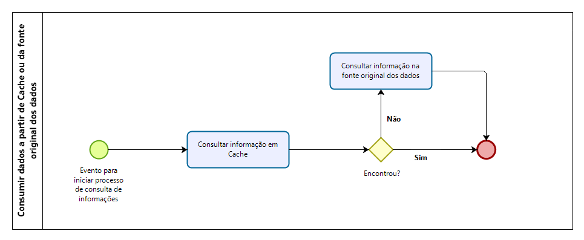
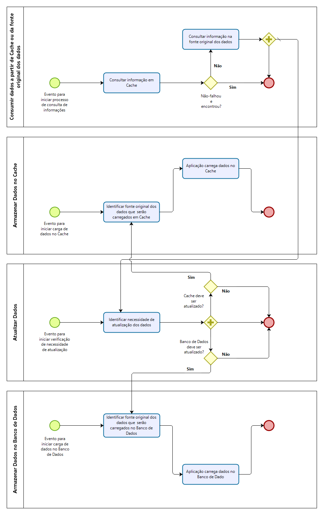
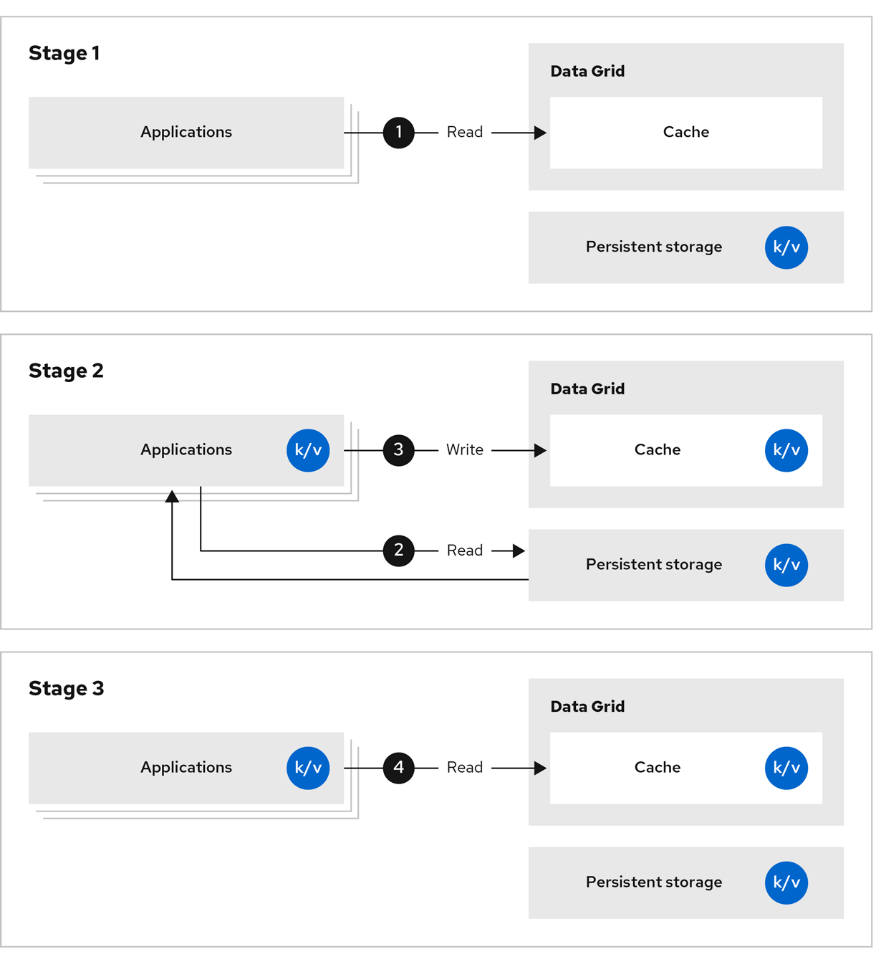
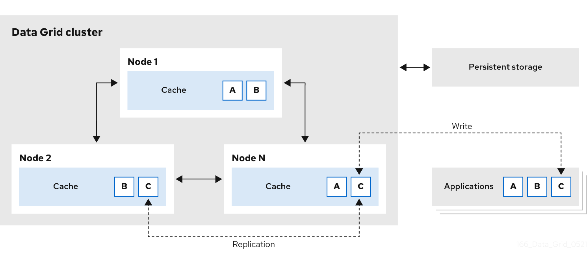
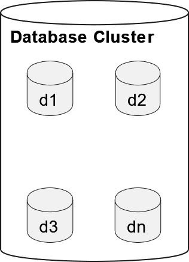

Cache em Banco de Dados In-Memory
Análise de Solução
Existem processos em que em que o resultado de uma operação:
-
Pode ser reaproveitado;
-
Apresenta potencial custo elevado para obtê-lo;
-
Não se altera para operações do mesmo tipo subsequentes; i.e., Memoization [1].
-
Que dado um valor x de entrada, a operação f(x) sempre retorna y para o mesmo x.
-
Por exemplo, resultado (y) do cálculo fatorial ( f(x) ) de 9999! (x).
-
Por exemplo, consultar nome ( f(x) ) da UF DF (x) sempre retorna “Distrito Federal” (y).
-
-
Desse modo, armazenar o resultado y de uma operação f(x) para uma entrada x em estruturas de cache [2] pode reduzir o tempo de resposta [3], reduzir a latência [4] e aumentar o throughput [5] de processos que utilizem essas operações.
-
Em situações em que o custo da operação f(x) justifique a construção e gestão de estruturas dessa natureza.
-
Por exemplo, justificar a alteração de processos existentes. Além da criação e da manutenção de novos processos.
- Por exemplo, processos negociais, de software, etc.
-
-
Em que a redução do custo apresenta resultado significativo.
- Por exemplo, evitar reprocessamento de avaliação de crédito = custo é o tempo necessário para execução da avaliação devido a sua complexidade.
As estruturas de cache organizam dados com as seguintes características:
-
Constantes ou imutáveis
-
Acesso repetido a dados que não são alterados ou tem baixa frequência de alteração; como informações de domínio.
- Por exemplo, consultar CEP (y) em sistema ( f(x) ) para uma endereço (x).
-
-
Temporários ou efêmeros
-
Dado um valor x de entrada, a operação f(x) sempre retorna y para o mesmo x somente em um intervalo de tempo definido t.
- Em outro intervalo de tempo t1 diferente de t, o resultado de f(x) pode não ser y para o mesmo x anterior.
-
Ou seja, o resultado da operação tem tempo de vida/validade definido com prazo de expiração (Time to Live TTL [6]).
-
Por exemplo, o resultado (y) de uma previsão meteorológica ( f(x) ) para uma cidade (x) poderia ter validade máxima de 3 dias (t).
-
Por exemplo, uma avaliação de crédito (y) comandada no SIRIC ( f(x) ) para um cliente (x) pode ter validade máxima de 1 hora (t).
-
-
Arquitetura implantada (ATUAL)
Qualquer consulta de informações é realizada diretamente na fonte original dos dados.
Sem qualquer estrutura intermediária.

Arquitetura definida (FUTURA)
Cache
Adição de uma estrutura de cache intermediária, quando for realizada consulta de informações, respeitando o seguinte algoritmo:
-
Consultar informação em cache;
-
Se não for encontrada, consultar informação na fonte original de dados.

O cache será utilizado como fonte primária, mas a aplicação utilizará a fonte de dados original se a informação não for encontrada no cache.
Falha no funcionamento do cache não inviabilizará consulta, resultado no seguinte algoritmo revisado:
-
Consultar informação em cache;
-
Se não for encontrada ou o cache falhar (não responder em tempo apropriado), consultar informação na fonte original de dados.
Ou seja, o cache fallback é a fonte de dados original e o cache é uma estrutura aceleradora de consultas.

O cache será atualizado e carregado conforme os seguintes processos:-
Quando não for encontrada informação no cache, a informação será consultada na fonte original de dados e será iniciado processo de [Atualização de Dados] com [evento para iniciar verificação de necessidade de atualização].
-
No momento de atualização do cache, deve-se verificar se há necessidade de armazenar essas informações de modo permanente ou persistente (em banco de dados).
-
Caso seja necessário armazenar de modo permanente, o cache deve ser atualizado em modo write-through [2]: o cache e o banco de dados serão atualizados simultaneamente.
-
Falha de gravação no banco de dados deve resultar em falha na gravação no cache.
- O cache não pode conter informações que não constam do banco de dados.
-
Se a operação do banco ocorrer com sucesso, mas com falha de gravação no cache: (as opções abaixo deverão ser selecionadas de modo apropriado de acordo as particularidades de cada sistema)
-
Ou, a falha pode ser ignorada se a ausência da informação no cache não apresentar prejuízo;
-
Ou, o cache pode ser atualizado por processo recorrente (agendado) que carregará as informações ausentes no cache assincronicamente;
-
Ou, o cache será atualizado na próxima consulta que encadeará em um processo [Atualização de Dados];
-
Ou, será repetida a tentativa de atualização do cache.
-
-
-
Caso não seja necessário, somente o cache será atualizado.
-
Em caso de falha de atualização do cache: (as opções abaixo deverão ser selecionadas de modo apropriado de acordo as particularidades de cada sistema)
-
Ou, a falha pode ser ignorada se a ausência da informação no cache não apresentar prejuízo;
-
Ou, o cache pode ser atualizado por processo recorrente (agendado) que carregará as informações ausentes no cache assincronicamente.
-
Ou, o cache será atualizado na próxima consulta que encadeará em um processo [Atualização de Dados];
-
Ou, será repetida a tentativa de atualização do cache.
-
-
-
-
Informações no cache serão expiradas automaticamente conforme TTL definido.
Deste modo, o cache conterá somente informações “válidas” (que estão dentro de período de expiração), pois informações “inválidas” serão expiradas (removidas) por estarem fora de intervalo de “validade”. Além disso, o cache será sempre atualizado com novas informações quando essas não forem encontradas.
A utilização das estruturas de cache respeitará as seguintes definições:
-
Os dados armazenadas em cache serão utilizados somente para consulta de resultados de operações.
- Ou seja, para aceleração de consultas.
-
As estruturas de cache irão expirar seus dados.
-
Os dados nas estruturas de cache devem ter TTL [6] definido se for requerido processo de expiração.
- Ou, não terem qualquer TTL definido se não for necessário expirar o dado.
-
A própria estrutura de cache expira dados que ultrapassem seu TTL.
-
Aplicações externas não irão realizar controle de expiração de dados na estrutura de cache.
-
-
As estruturas de cache não carregarão seus dados.
-
Ou seja, uma aplicação externa ao cache deve realizar a carga de dados se necessário.
- Por exemplo, o serviço de um sistema.
-
-
As estruturas de cache não atualizarão seus dados.
-
Ou seja, uma aplicação externa ao cache deve realizar atualização de dados se necessário.
- Por exemplo, o serviço de um sistema.
-
Critérios
Cache
Adição Arquiteturas de cache buscam incremento de desempenho pelo
reaproveitamento de informações.
Propomos os seguintes critérios para identificação de candidatos
adequados para essas arquiteturas.
-
A informação que será armazenada em cache pode ser reaproveitada?
- A informação deve ser reutilizada ao menos 1 vez.
-
A informação não se altera para operações do mesmo tipo subsequentes?
- Que dado um valor x de entrada, a operação f(x) sempre retorna y para o mesmo x em um intervalo de tempo definido t.
-
A informação apresenta potencial custo elevado para obtê-la?
-
O custo para obtenção/produção da informação é elevado.
- Por exemplo, capacidade de processamento, complexidade, espaço, limites de acesso, rate limit, throughput de rede, tempo de resposta, etc.
-
Custo também é infraestrutura, mas essa não é a única métrica de custo.
- Custo é principalmente: custo da execução do processo para produção da informação.
-
-
O custo da operação f(x) justifica a construção e gestão de estruturas dessa natureza?
-
Estruturas de cache exigem construção, gestão e operação de infraestrutura.
-
Implicando em maior complexidade e mais um ponto de atenção/falha.
-
Mesmo que exista fallback para o cache.
-
Falha no cache implicará que o novo custo da operação será:
-
( O custo da operação original ) + ( o tempo necessário para aplicação detectar que o cache não está respondendo )
- O custo de detecção pode ser por acesso se o processo não estiver preparado para lidar com falhas de forma GLOBAL: tratar falha do cache ao invés de falha por acesso ao cache.
-
-
Ou seja, falha nessas estruturas pode implicar em custo superior ao custo original.
-
-
A arquitetura irá conter mais um elemento arquitetural significativo.
-
-
Estruturas de cache exigem alteração de processos na arquitetura original.
-
Em algumas situações, as alterações podem ser quase transparentes.
-
Entretanto, em outras, exigem criação de novos componentes para tratamento de novos processos (encontrei, não encontrei, atualizar, etc).
-
Deste forma, agregando complexidade aos processos da arquitetura original.
-
-
-
Há redução do custo de resultado significativo?
-
Utilização de estrutura de cache é um caso particular de processo de otimização.
-
Qualquer processo de otimização deve ser precedido de mensuração.
-
Mensuração de indicadores significativos para característica que se deseja melhorar.
-
Somente é possível verificar melhoria medindo evolução desses indicadores.
-
-
A definição do uso de estrutura de cache está ligada ao custo de um processo existente.
-
Em que a utilização de estrutura de cache reduziria esse custo.
-
Entretanto, sugerimos verificar se os processos negociais exigem a estrutura ou podem ser revistos removendo a necessidade.
- Pode ser possível que o design do processo possa ser alterado para que o custo seja reduzido (mesmo sem a estrutura de cache) ou mesmo que o processo seja substituído por outro ou mesmo removido.
-
-
Considerando a complexidade de definir resultado significativo de forma genérica, seguem:
-
"We should forget about small efficiencies, say about 97% of the time: premature optimization is the root of all evil. Yet we should not pass up our opportunities in that critical 3%" (Donald Knuth) [7]
"The overall performance improvement gained by optimizing a single part of a system is limited by the fraction of time that the improved part is actually used" (Gene Amdahl) [8] [9]
Tecnologias
Bancos com múltiplas instâncias
Estrutura de banco em que existe mais de um servidor envolvido.
Bancos replicados
Padrão arquitetural em que todas as instâncias individuais contêm as mesmas informações, agregando disponibilidade e capacidade de processamento.
Maximiza desempenho de leitura com redução no desempenho de escrita. Maior durabilidade [10] devido as réplicas.
-
Escrita: Operações de escrita em qualquer servidor são replicadas em todos as demais instâncias. Desta forma, as operações de escrita consomem mais tempo que um banco de única instância.
-

Leitura: Qualquer servidor pode responder a operações de leitura. Desta forma, as operações de leitura apresentam maior disponibilidade e melhor tempo de resposta.
Considerações
-
Todas as instâncias da estrutura do banco devem possuir recursos suficientes para armazenar todas as informações necessárias. Desta forma, os recursos de uma instância representam o limite de informações que podem ser armazenadas.
-
O requisito de replicação em todas as operações de escrita representa impacto de desempenho que pode restringir a construção de estrutura com grande número de instâncias, ou seja, pode limitar a quantidade de instâncias.
- Devido a quantidade de operações necessárias para garantir que as operações ocorrem na sequência correta de forma síncrona em todos os nós do cluster.
-
Operações de leitura e escrita podem ser realizadas com sincronia ou ausência de sincronia entre as operações devido a arquitetura distribuída em um clássico problema de concorrência de leitores-escritores [11].
-
Escrita: É possível escrever simultaneamente sem garantia de ordenação. Por exemplo, 3 operações de escrita podem ser realizadas simultaneamente sem que seja possível saber qual será o resultado até que todas tenham sido finalizadas.
-
Leitura: É possível ler valores anteriores enquanto mensagens de sincronização são transmitidas entre instâncias confirmando a escrita de novos valores.
-
-
A consistência dos dados distribuídos deve ser garantida por algoritmo de consenso distribuído (por exemplo, Paxos [12] ou Raft [13]), por estratégia arquitetural ou por estratégia da aplicação.
Bancos distribuídos
Padrão arquitetural em que as informações estão distribuídas em diversas instâncias, mas em que as instâncias não são todas réplicas exatas. Inclusão de novas instâncias busca incrementar a capacidade de processamento, armazenamento, disponibilidade e/ou durabilidade.
Maximiza recursos de armazenamento e de processamento com desempenho de escrita com redução no desempenho de leitura.
-
Escrita: Operações de escrita são realizadas num número mínimo de instâncias, mas não serão replicadas em todas as demais instâncias. Desta forma, as operações de escrita consomem mais tempo que um banco de única instância, mas menos tempo que um banco replicado.
-
Leitura: Somente servidores específicos podem responder a operações de leitura. Desta forma, as operações de leitura apresentam menor disponibilidade e alteração no tempo de resposta.

Considerações
Operações de leitura e escrita podem ser realizadas com sincronia ou ausência de sincronia entre as operações devido a arquitetura distribuída em um clássico problema de concorrência de leitores-escritores [11].
-
Escrita: É possível escrever simultaneamente sem garantia de ordenação. Por exemplo, 3 operações de escrita podem ser realizadas simultaneamente sem que seja possível saber qual será o resultado até que todas tenham sido finalizadas.
-
Leitura: É possível ler valores anteriores enquanto mensagens de sincronização são transmitidas entre instâncias confirmando a escrita de novos valores.
A consistência dos dados distribuídos deve ser garantida por algoritmo de consenso distribuído (por exemplo, Paxos [12] ou Raft [13]), por estratégia arquitetural ou por estratégia da aplicação.
Bancos de dados in-memory
Bancos de dados [14] in-memory [15] armazenam e realizam suas operações exclusivamente, ou preferencialmente, em memória.
Desta forma, ultrapassam o desempenho de soluções otimizadas para armazenamento tradicional em disco [16].
Entretanto, devido à natureza de armazenamento em memória, os dados disponíveis são efêmeros, transientes e temporários. Ao finalizar a execução do banco e dados, os dados são descartados devido à natureza volátil de memória.
Além disso, por não se tratar de sistemas gerenciadores de bancos de dados “tradicionais” (por exemplo, relacionais), não estão naturalmente disponíveis garantias esperadas como ACID (atomicidade, consistência, isolamento e durabilidade) [17], two-phase commit [18], three-phase commit [19], single source of truth [20], resistência a falhas, integridade dos dados, etc.
Diversas garantias e/ou características poderão ser atendidas por decisões arquiteturais, decisões de projeto de software e/ou configurações de sistemas/componentes/bancos envolvidos.
Backend não volátil
Visando maior durabilidade, banco de dados in-memory pode utilizar armazenamento não volátil para registro de histórico de operações. Desta forma, operando in-memory, mas com referência de operações para recuperação em caso de falha. Por exemplo, reprocessar histórico de operações para reconstituir o estado do banco de dados após falha do servidor a partir de write ahead log (WAL) [21], log de transações [22], etc.
Bancos de dados de chave-valor (key-value)
Bancos de dado de chave-valor (key-value) [23] apresentam paradigma apropriado para construção de estruturas de cache como aqui definidas: dado um valor x de entrada, a operação f(x) sempre retorna y para o mesmo x.
De modo simplificado, bancos de dado de chave-valor apresentam comportamento similar a estruturas de hash table [24] em que os valores (y) armazenados são opacos/desconhecidos para as estruturas que reconhecem apenas as chaves (x); utilizadas para recuperar os valores (y).
Bancos de dados de chave-valor também apresentam outras características interessantes para cache:
-
Permitem utilização de valores heterogêneos na mesma estrutura de dados de modo a comportar:
-
Diferentes tipos de dados (texto, imagem, áudio, etc);
-
Diferentes formas de representação (texto, binário, imagem comprimida, etc) ;
-
Diferentes tamanhos.
-
Tabela - Exemplo hipotético de dados heterogêneos em estrutura de banco de dados de chave valor.
| Key | Value |
|---|---|
| 1asas | 111,ZZZ,0 |
| Teste Texto | CPF 9999 |
| " Foto aniversário " | [IMAGEM] |
| Ozzy Floyd | [ÁUDIO] |
-
Podem ser construídos in-memory (em memória, in-memory database ou IMDB) [15] para situações em que o tempo de resposta [3] é crítico.
-
Podem ser distribuídos [25] para garantir escalabilidade (tamanho e processamento);

Figura - Exemplo hipotético de servidores distribuídos
- Realizam controle de expiração de dados [6].
On premises
Red Hat Data Grid
Red Hat Data Grid [26] é um representante de tecnologia de bancos de chave-valor in-memory apresentando:
-
Baixa latência de resposta;
-
Alto throughput;
-
Alta disponibilidade [27];
-
Baixo tempo de resposta com construção in-memory.
-
Escalabilidade horizontal [28];
-
Compatibilidade para instalação em
-
Red Hat OpenShift Container Platform [29] e OKD [30]
-
OKD 3.11
- Red Hat Data Grid versões 7.3 e 8.1
-
OKD 4.0
- Red Hat Data Grid 8.1
-
-
VMWare [31] [32];
- Red Hat Data Grid 8.1
-
Segundo observações do fornecedor Red Hat, seguem prós e contras das combinações tecnológicas para implantação de Red Hat Data Grid. A ordem das combinações tecnológicas é decrescente da mais recomendada para menos recomendada conforme o fornecedor.
Tabela - Análise/recomendação apresentada pela Red Hat sobre combinações de versões de softwares OKD e Data Grid
| Tecnologias | Prós | Contras |
|---|---|---|
| OKD 4.xx c/ Data Grid 8.1 | • Arquitetura mais utilizada e recomendada • Arquitetura do produto casado com a plataforma • Implantação automatizada • Operação automatizada via Operator (monitoração, elasticidade, alta disponibilidade, etc) • Sem problemas de integração |
|
| OKD 3.11 c/ Data Grid 8.1 | • Arquitetura mais próxima da plataforma do cliente atualmente | • Implantação de forma tradicional (sem automação) • Sem gerência automatizada do ciclo de vida • Versão da plataforma depreciada |
| OKD 3.11 c/ Data Grid 7.1 | • Arquitetura próxima à arquitetura do cliente | • Implantação de forma tradicional (sem automação) • Sem gerência automatizada do ciclo de vida • Existe imagem do produto para versão da plataforma • Versão da plataforma depreciada • Versão de produto depreciada |
| Máquinas virtuais c/ Data Grid 8.1 | • Acoplamento da instalação com a tecnologia/imagem. | • Implantação de forma tradicional (sem automação) • Operação do dia a dia mais trabalhosa (Não ser baseado em containers) • Latência mais alta |
O fornecedor Red Hat recomenda que ambientes sejam construídos com OKD 4 e Red Hat Data Grid 8.1.
Documentações detalhadas estão disponíveis para Red Hat Data Grid versões 7.3 [33] e 8.3 [34] [35] [36] [37].
Cloud
Redis
Remote Dictionary Server (REDIS) é uma estrutura de armazenamento de dados in-memory com capacidades de:
-
Banco de dados de chave-valor
-
Broker de mensagens com suporte a publish–subscribe messaging
-
Persistência de dados
-
Escalabilidade com master-replica replication
-
Suporte nativo para tipos de dados abstratos:
-
Lists
-
Sets
-
Sorted sets
-
Hash tables
-
HyperLogsLogs
-
Streams of entries
-
Geohash
-
-
Suporte nativo a tipos de dados:
-
JSON – RedisJSON
-
Graph – RedisGraph
-
Time Series – RedisTimeSeries
-
Bloom filter, Cuckoo filter, Count-min sketch e Top-K – RedisBloom
-
Referências
| [1] | WIKIMEDIA FOUNDATION, INC. ET AL. Memoization. Wikipedia, 21 abr. 2022. Disponível em: <http://web.archive.org/web/20220524005938/https://en.wikipedia.org/wiki/Memoization>. Acesso em: 24 maio 2022. |
|---|---|
| [2] | WIKIMEDIA FOUNDATION, INC. ET AL. Cache (computing). Wikipedia, 21 maio 2022. Disponível em: <http://web.archive.org/web/20220528143923/https://en.wikipedia.org/wiki/Cache_(computing)>. Acesso em: 21 maio 2022. |
| [3] | WIKIMEDIA FOUNDATION, INC. ET AL. Round-trip delay (response time, Round-trip delay time). Wikipedia, 11 maio 2022. Disponível em: <http://web.archive.org/web/20220514072722/https://en.wikipedia.org/wiki/Round-trip_delay>. Acesso em: 14 maio 2022. |
| [4] | WIKIMEDIA FOUNDATION, INC. ET AL. Latency (engineering). Wikipedia, 26 fev. 2022. Disponível em: <http://web.archive.org/web/20220531021919/https://en.wikipedia.org/wiki/Latency_(engineering)>. Acesso em: 31 maio 2022. |
| [5] | WIKIMEDIA FOUNDATION, INC. ET AL. Network throughput. Wikipedia, 22 mar. 2022. Disponível em: <http://web.archive.org/web/20220530152008/https://en.wikipedia.org/wiki/Network_throughput>. Acesso em: 30 maio 2022. |
| [6] | WIKIMEDIA FOUNDATION, INC. ET AL. Time to live. Wikipedia, 09 fev. 2022. Disponível em: <http://web.archive.org/web/20220525090804/https://en.wikipedia.org/wiki/Time_to_live>. Acesso em: 25 maio 2022. |
| [7] | WIKIMEDIA FOUNDATION, INC. ET AL. Program optimization. Wikipedia, 24 maio 2022. Disponível em: <http://web.archive.org/web/20220525050829/https://en.wikipedia.org/wiki/Program_optimization>. Acesso em: 25 maio 2022. |
| [8] | WIKIMEDIA FOUNDATION, INC. ET AL. Amdahl's law. Wikipedia, 23 maio 2022. Disponível em: <http://web.archive.org/web/20220531133557/https://en.wikipedia.org/wiki/Amdahl%27s_law>. Acesso em: 31 maio 2022. |
| [9] | WIKIMEDIA FOUNDATION, INC. ET AL. Lei de Amdahl. Wikipedia, 06 mar. 2022. Disponível em: <http://web.archive.org/web/20220406220012/https://pt.wikipedia.org/wiki/Lei_de_Amdahl>. Acesso em: 26 jan. 2022. |
| [10] | WIKIMEDIA FOUNDATION, INC. ET AL. Durability (database systems). Wikipedia, 16 out. 2021. Disponível em: <https://web.archive.org/web/20221223083131/http://en.wikipedia.org/wiki/Durability_(database_systems)>. Acesso em: 23 dez. 2022. |
| [11] | WIKIMEDIA FOUNDATION, INC. ET AL. Readers–writers problem. Wikipedia, 02 jan. 2023. Disponível em: <http://web.archive.org/web/20230118215459/https://en.wikipedia.org/wiki/Readers%E2%80%93writers_problem>. Acesso em: 18 jan. 2023. |
| [12] | WIKIMEDIA FOUNDATION, INC. ET AL. Paxos (computer science). Wikipedia, 07 nov. 2022. Disponível em: <https://web.archive.org/web/20221120042427/https://en.wikipedia.org/wiki/Paxos_(computer_science)>. Acesso em: 20 nov. 2022. |
| [13] | WIKIMEDIA FOUNDATION, INC. ET AL. Raft (algorithm). Wikipedia, 27 set. 2022. Disponível em: <https://web.archive.org/web/20221019093139/https://en.wikipedia.org/wiki/Raft_(algorithm)>. Acesso em: 19 out. 2022. |
| [14] | WIKIMEDIA FOUNDATION, INC. ET AL. Database (Data base management system). Wikipedia, 20 maio 2022. Disponível em: <http://web.archive.org/web/20220520072042/https://en.wikipedia.org/wiki/Database>. Acesso em: 19 maio 2022. |
| [15] | WIKIMEDIA FOUNDATION, INC. ET AL. In-memory database. Wikipedia, 22 nov. 2022. Disponível em: <http://web.archive.org/web/20221231193251/https://en.wikipedia.org/wiki/In-memory_database>. Acesso em: 31 dez. 2022. |
| [16] | WIKIMEDIA FOUNDATION, INC. ET AL. Disk storage. Wikipedia, 06 nov. 2022. Disponível em: <http://web.archive.org/web/20221125184318/https://en.wikipedia.org/wiki/Disk_storage>. Acesso em: 25 nov. 2022. |
| [17] | WIKIMEDIA FOUNDATION, INC. ET AL. ACID. Wikipedia, 09 dez. 2022. Disponível em: <http://web.archive.org/web/20230118185322/https://en.wikipedia.org/wiki/ACID>. Acesso em: 18 jan. 2023. |
| [18] | WIKIMEDIA FOUNDATION, INC. ET AL. Two-phase commit protocol. Wikipedia, 04 dez. 2022. Disponível em: <https://web.archive.org/web/20221227230944/https://en.wikipedia.org/wiki/Two-phase_commit_protocol>. Acesso em: 27 dez. 2022. |
| [19] | WIKIMEDIA FOUNDATION, INC. ET AL. Three-phase commit protocol. Wikipedia, 06 jul. 2021. Disponível em: <http://web.archive.org/web/20221225060505/http://en.wikipedia.org/wiki/Three-phase_commit_protocol>. Acesso em: 25 dez. 2022. |
| [20] | WIKIMEDIA FOUNDATION, INC. ET AL. Single source of truth. Wikipedia, 04 jan. 2023. Disponível em: <http://web.archive.org/web/20230115000113/https://en.wikipedia.org/wiki/Single_source_of_truth>. Acesso em: 15 jan. 2023. |
| [21] | WIKIMEDIA FOUNDATION, INC. ET AL. Write-ahead logging. Wikipedia, 18 ja. 2023. Disponível em: <https://web.archive.org/web/20230118185404/https://en.wikipedia.org/wiki/Write-ahead_logging>. Acesso em: 25 dez. 2022. |
| [22] | WIKIMEDIA FOUNDATION, INC. ET AL. Transaction log. Wikipedia, 18 jul. 2022. Disponível em: <https://web.archive.org/web/20230109221403/https://en.wikipedia.org/wiki/Transaction_log>. Acesso em: 09 jan. 2023. |
| [23] | WIKIMEDIA FOUNDATION, INC. ET AL. Key–value database. Wikipedia, 23 abr. 2022. Disponível em: <http://web.archive.org/web/20220531010718/https://en.wikipedia.org/wiki/Key%E2%80%93value_database>. Acesso em: 31 maio 2022. |
| [24] | WIKIMEDIA FOUNDATION, INC. ET AL. Hash table. Wikipedia, 29 maio 2022. Disponível em: <http://web.archive.org/web/20220531134001/https://en.wikipedia.org/wiki/Hash_table>. Acesso em: 31 maio 2022. |
| [25] | WIKIMEDIA FOUNDATION, INC. ET AL. Distributed cache. Wikipedia, 21 fev. 2022. Disponível em: <http://web.archive.org/web/20220511131635/https://en.wikipedia.org/wiki/Distributed_cache>. Acesso em: 11 maio 2022. |
| [26] | RED HAT, INC. Red Hat Data Grid. Red Hat, 2022. Disponível em: <http://web.archive.org/web/20220603194629/https://www.redhat.com/en/technologies/jboss-middleware/data-grid>. Acesso em: 03 jun. 2022. |
| [27] | WIKIMEDIA FOUNDATION, INC. ET AL. High-availability cluster. Wikipedia, 28 abr. 2022. Disponível em: <http://web.archive.org/web/20220512143649/https://en.wikipedia.org/wiki/High-availability_cluster>. Acesso em: 12 maio 2022. |
| [28] | WIKIMEDIA FOUNDATION, INC. ET AL. Scalability - Horizontal and vertical scaling. Wikipedia, 07 maio 2022. Disponível em: <http://web.archive.org/web/20220514132248/https://en.wikipedia.org/wiki/Scalability#Horizontal_(scale_out)_and_vertical_scaling_(scale_up)>. Acesso em: 14 maio 2022. |
| [29] | WIKIMEDIA FOUNDATION, INC. ET AL. Openshift. Wikipedia, 19 abr. 2022. Disponível em: <http://web.archive.org/web/20220423134519/https://en.wikipedia.org/wiki/OpenShift>. Acesso em: 23 abr. 2022. |
| [30] | OKD: The Community Distribution of Kubernetes that powers Red Hat's OpenShift. OKD.io, 2023. Disponível em: <http://web.archive.org/web/20230129230830/https://www.okd.io/>. Acesso em: 29 jan. 2023. |
| [31] | WIKIMEDIA FOUNDATION, INC. ET AL. VMware. Wikipedia, 31 maio 2022. Disponível em: <http://web.archive.org/web/20220531164500/https://en.wikipedia.org/wiki/VMWare>. Acesso em: 31 maio 2022. |
| [32] | WIKIMEDIA FOUNDATION, INC. ET AL. VMware ESXi. Wikipedia, 12 maio 2022. Disponível em: <http://web.archive.org/web/20220531103136/https://en.wikipedia.org/wiki/VMware_ESXi>. Acesso em: 31 maio 2022. |
| [33] | RED HAT, INC. Red Hat Data Grid 7.3. Red Hat Customer Portal, 2021. Disponível em: <http://web.archive.org/web/20211024025546/https://access.redhat.com/documentation/en-us/red_hat_data_grid/7.3>. Acesso em: 24 out. 2021. |
| [34] | RED HAT, INC. Red Hat Data Grid 8.3. Red Hat Customer Portal, 2022. Disponível em: <http://web.archive.org/web/20211024025546/https://access.redhat.com/documentation/en-us/red_hat_data_grid/8.3>. Acesso em: 01 jun. 2022. |
| [35] | RED HAT, INC. Red Hat Data Grid 8.4 | Data Grid Performance and Sizing Guide. Red Hat Customer Portal, 2023. Disponível em: <http://web.archive.org/web/20230216195710/https://access.redhat.com/documentation/en-us/red_hat_data_grid/8.4/html-single/data_grid_performance_and_sizing_guide/index>. Acesso em: 16 fev. 2023. |
| [36] | RED HAT, INC. Red Hat Data Grid 8.3 | Installing Data Grid Operator. Red Hat Customer Portal, 2022. Disponível em: <http://web.archive.org/web/20220606144222/https://access.redhat.com/documentation/en-us/red_hat_data_grid/8.3/guide/fd77665b-d6df-4e25-a9cd-45fbed6dd6c1>. Acesso em: 06 jun. 2022. |
| [37] | RED HAT, INC. Red Hat Data Grid 8.3 | Setting up Data Grid services. Red Hat Customer Portal, 2022. Disponível em: <http://web.archive.org/web/20220606145147/https://access.redhat.com/documentation/en-us/red_hat_data_grid/8.3/guide/62f95f80-cb6c-4a5d-8019-9c2fdb46e818>. Acesso em: 06 jun. 2022. |
| [38] | WIKIMEDIA FOUNDATION, INC. ET AL. Database caching. Wikipedia, 24 mar. 2022. Disponível em: <http://web.archive.org/web/20220403044948/https://en.wikipedia.org/wiki/Database_caching>. Acesso em: 03 abr. 2022. |
| [39] | WIKIMEDIA FOUNDATION, INC. ET AL. Rate limiting. Wikipedia, 30 dez. 2021. Disponível em: <http://web.archive.org/web/20220530151958/https://en.wikipedia.org/wiki/Rate_limiting>. Acesso em: 30 maio 2022. |
| [40] | WIKIMEDIA FOUNDATION, INC. ET AL. Cache replacement policies. Wikipedia, 23 maio 2022. Disponível em: <http://web.archive.org/web/20220602011929/https://en.wikipedia.org/wiki/Cache_replacement_policies>. Acesso em: 02 jun. 2022. |
| [41] | WIKIMEDIA FOUNDATION, INC. ET AL. Replication (computing). Wikipedia, 04 jun. 2022. Disponível em: <http://web.archive.org/web/20220604085135/https://en.wikipedia.org/wiki/Replication_(computing)>. Acesso em: 02 abr. 2022. |
| [42] | WIKIMEDIA FOUNDATION, INC. ET AL. Redis. Wikipedia, 10 out. 2022. Disponível em: <http://web.archive.org/web/20221115095006/https://en.wikipedia.org/wiki/Redis>. Acesso em: 15 nov. 2022. |
| [43] | WIKIMEDIA FOUNDATION, INC. ET AL. NoSQL. Wikipedia, 13 maio 2022. Disponível em: <https://web.archive.org/web/20191219225427/https://en.wikipedia.org/wiki/NoSQL>. Acesso em: 17 maio 2022. |
| [44] | MICROSOFT. Azure Cache for Redis. Microsoft Azure, 2022. Disponível em: <http://web.archive.org/web/20221031162848/https://azure.microsoft.com/en-us/products/cache/>. Acesso em: 31 out. 2022. |
| [45] | RED HAT, INC. Red Hat Data Grid 8.4. Red Hat Customer Portal, 2023. Disponível em: <http://web.archive.org/web/20230117145046/https://access.redhat.com/documentation/en-us/red_hat_data_grid/8.4>. Acesso em: 17 jan. 2023. |
| [46] | WIKIMEDIA FOUNDATION, INC. ET AL. Workflow pattern. Wikipedia, 25 out. 2022. Disponível em: <http://web.archive.org/web/20230211000422/https://en.wikipedia.org/wiki/Workflow_pattern>. Acesso em: 11 fev. 2023. |
| [47] | WIKIMEDIA FOUNDATION, INC. ET AL. SQL. Wikipedia, 18 dez. 2022. Disponível em: <https://web.archive.org/web/20221227201651/https://en.wikipedia.org/wiki/SQL>. Acesso em: 27 dez. 2022. |
| [48] | WIKIMEDIA FOUNDATION, INC. ET AL. Java virtual machine. Wikipedia, 28 jan. 2023. Disponível em: <http://web.archive.org/web/20230210113936/https://en.wikipedia.org/wiki/Java_virtual_machine>. Acesso em: 10 fev. 2023. |
| [49] | WIKIMEDIA FOUNDATION, INC. ET AL. Kubernetes. Wikipedia, 23 maio 2022. Disponível em: <http://web.archive.org/web/20220511225236/https://en.wikipedia.org/wiki/Kubernetes>. Acesso em: 11 maio 2022. |
| [50] | WIKIMEDIA FOUNDATION, INC. ET AL. Byte. Wikipedia, 03 jun. 2022. Disponível em: <http://web.archive.org/web/20220608014918/https://en.wikipedia.org/wiki/Byte>. Acesso em: 08 jun. 2022. |
| [51] | RED HAT, INC. Red Hat Data Grid 8.3 | Creating Data Grid clusters. Red Hat Customer Portal, 2022. Disponível em: <http://web.archive.org/web/20220606144812/https://access.redhat.com/documentation/en-us/red_hat_data_grid/8.3/guide/442c5930-a3b9-4090-aad0-28a877d0644c>. Acesso em: 06 jun. 2022. |
| [52] | WIKIMEDIA FOUNDATION, INC. ET AL. Quarkus. Wikipedia, 22 ago. 2022. Disponível em: <http://web.archive.org/web/20220823153345/https://en.wikipedia.org/wiki/Quarkus>. Acesso em: 23 ago. 2022. |
| [53] | WIKIMEDIA FOUNDATION, INC. ET AL. Circuit breaker design pattern. Wikipedia, 23 jan. 2023. Disponível em: <http://web.archive.org/web/20230130120430/https://en.wikipedia.org/wiki/Circuit_breaker_design_pattern>. Acesso em: 30 jan. 2023. |
Histórico das Revisões
| Data | Versão | Descrição | Responsável | RTC |
|---|---|---|---|---|
| 02/06/2022 | 1.0 | Cache para aceleração de consultas usando Key-Value Database In-memory: Red Hat Data Grid | Mário Ferreira (C101038) SUART13 | 19886299 |
| 03/01/2023 | 1.1 | Adicionar legenda nas imagens | Mário Ferreira (C101038) SUART13 | n.a. |
| 17/02/2023 | 1.2 |
|
Mário Ferreira (C101038) SUART13 | 20250718 |